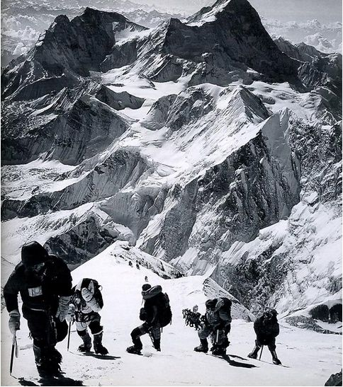

Mount Everest
Of all the peaks around the globe, Mount Everest is by far the most popular among the mountaineering community. Mount Everest, standing tall at 8,848.86 meters (29,031.7 feet) above sea level, is the highest peak on Earth and holds a revered status in the mountaineering community. Located in the Himalayas on the border between Nepal and China (Tibet), Everest has captured the imagination of adventurers and climbers from around the world since it was first surveyed in the 19th century.
The allure of Everest lies not only in its towering height but also in the mystique surrounding its formidable challenges. Climbing Everest is an arduous and perilous undertaking, requiring months of preparation, physical conditioning, and technical expertise. The mountain's extreme altitude, unpredictable weather, crevasse-riddled glaciers, and notorious "death zone" above 8,000 meters pose significant risks to climbers.

Despite these challenges, Everest continues to attract seasoned mountaineers seeking to test their limits and achieve the ultimate pinnacle of climbing success. The allure of standing atop the world's highest peak, gazing out over the sweeping vistas of the Himalayas, is a dream that drives many climbers to embark on the arduous journey to Everest's summit.
The history of Everest is littered with tales of triumph and tragedy, heroic feats and heartbreaking losses. From the historic first ascent by Sir Edmund Hillary and Tenzing Norgay in 1953 to the modern commercial expeditions that bring hundreds of climbers to the mountain each year, Everest has remained at the forefront of mountaineering lore.
Yet, the popularity of Everest also comes with its share of controversies, including overcrowding, environmental degradation, and ethical concerns surrounding commercial guiding operations. Despite these challenges, Everest remains a symbol of human achievement and the indomitable spirit of exploration that drives people to push beyond their limits in pursuit of lofty goals. For many in the mountaineering community, standing atop Everest represents the pinnacle of their climbing aspirations—a testament to the enduring allure of the world's highest peak.
Below is a graph detailing various statistics about the number of climbers, summits, deaths, and more on Mount Everest between the years 1953 and 2014: